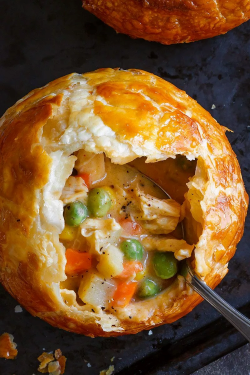

Chicken Pot Pie
Ingredients
- 500g chicken thighs and chopped unti bite size Pieces
- 1 tablespoon olive oil
- 1 onion that us chopped
- 2 cloves garlic
- 2 carrots
- 2 celery sticks
- 150g peas
- 2 tablespoons of plain floor
- 300ml chicken stock
- 200ml double cream or creme fraiche
- 1 teaspoon Djion mustard (optional)
- 1 teasponn fresh thyme leaves
YouTube Link
Website Link
Mac and Cheese
Ingredients
- 14 cloves of garlic
- 45g butter
- 3 heaped tablesponns plain flour
- 6 fresh bay leaves
- 1 litre semi-skimmed milk
- 800g dried macaroni
- 8 tomatoes
- 200g mature cheddar cheese
- 10g breadcrumbs
- 1 tablespoon of olive oil
YouTube Link
Website Link